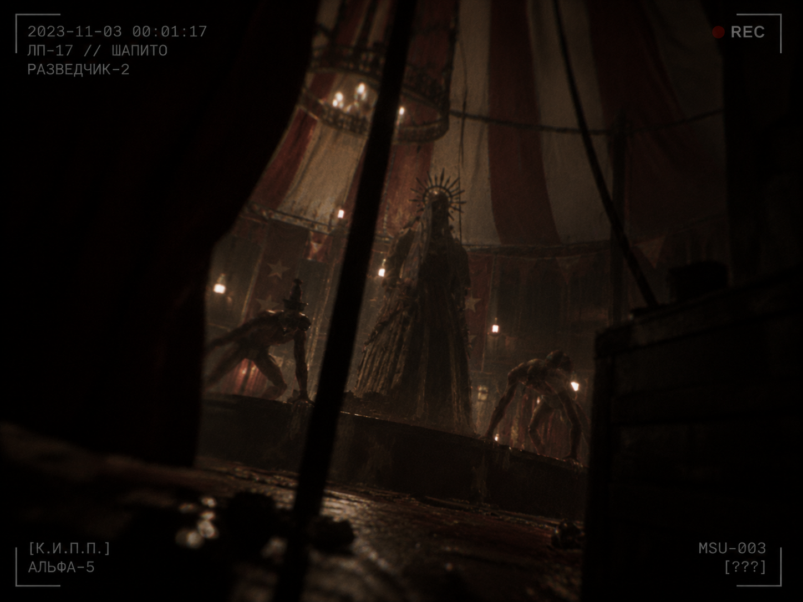

Объект №: SCP-MSU-003

Особые условия содержания:
В настоящее время SCP-MSU-003 не содержится. Ввиду его расположения внутри лиминального пространства ЛП-17 (операция «ПОРОГ-17»), стандартные протоколы изоляции неприменимы. Основная задача персонала К.И.П.П. в зоне «Шапито» сводится к дистанционному наблюдению и сбору телеметрических данных.
Любые попытки физического устранения SCP-MSU-003, а также ассоциированных сущностей (SCP-MSU-003-1 и SCP-MSU-003-2) строго запрещены. Приказ на уничтожение объектов выдается исключительно инстанцией «Совет К.И.П.П.». Запрет на несанкционированное уничтожение также распространяется на [ДАННЫЕ УДАЛЕНЫ].
В случае проявления объектами активности предписывается немедленная эвакуация за пределы центрального периметра.
Описание:
SCP-MSU-003 — аномальная гуманоидная сущность, обитающая в лиминальном пространстве ЛП-17 (возникновение которого является следствием пространственного события «Сопряжение»), в зоне, классифицируемой как «Шапито». Зона «Шапито» предположительно является центральной частью ЛП-17, однако её функциональное назначение в структуре пространства на данный момент неизвестно. В данной локации также обитает SCP-MSU-009 (подробная информация содержится в соответствующем документе).
Сущность SCP-MSU-003 постоянно сопровождается двумя зависимыми аномалиями, классифицированными как SCP-MSU-003-1 и SCP-MSU-003-2. Физиологически они представляют собой искаженные организмы с измененной мышечной и костной структурой. `[требует проверки lore_keeper]`
При приближении органических субъектов SCP-MSU-003 инициирует локальное изменение радиационного фона и гравитационного поля, что приводит к дезинтеграции органики на молекулярном уровне. Время протекания процесса дезинтеграции не превышает 0,1 с. SCP-MSU-003-1 и SCP-MSU-003-2 выполняют функцию периметровых сенсоров, реагируя на присутствие посторонних и координируя реакцию основного объекта. `[требует проверки lore_keeper]`
Приложение:
Протокол инцидента 003-A (Выдержка из телеметрии)
Источник: Камера наблюдения №4, автономный дрон «Разведчик-2»
Локация: ЛП-17, центральный периметр «Шапито»
Статус данных: [ДАННЫЕ ПОВРЕЖДЕНЫ] — обнаружено множественное искажение сигнала, восстановлено 34% пакетов.
[НАЧАЛО ЗАПИСИ]
00:00:12 — [ПОМЕХИ] ...визуальный контакт с объектами SCP-MSU-003, 003-1, 003-2. Субъекты находятся в состоянии покоя.
00:00:45 — Фиксация движения. Температурный фон в радиусе 10 метров возрастает на 14°C.
00:00:48 — [СИГНАЛ ПОВРЕЖДЕН] ...скачок показаний Е.Э.Д. до [УДАЛЕНО].
00:00:51 — Активация SCP-MSU-003. Зафиксирована дестабилизация гравитационного поля.
00:00:52 — [ВНИМАНИЕ: СБОЙ СЕНСОРОВ] ...массовое разрушение белковых структур... Критическая потеря сигналов телеметрии в секторе B-4. Исчезновение биомаркеров оперативной группы "Дельта".
00:00:54 — [ДАННЫЕ ПОВРЕЖДЕНЫ]
00:00:59 — Изоляция поврежденных блоков памяти дрона. Переход в режим гибернации. Экранирование защитного корпуса выдержало структурный распад с потерей 87% прочности.
[КОНЕЦ ЗАПИСИ]
Примечание исследователя: Выживаемость носителя информации объясняется неорганической природой дрона. Это объясняет, почему данная запись частично уцелела при полной аннигиляции органики вокруг.